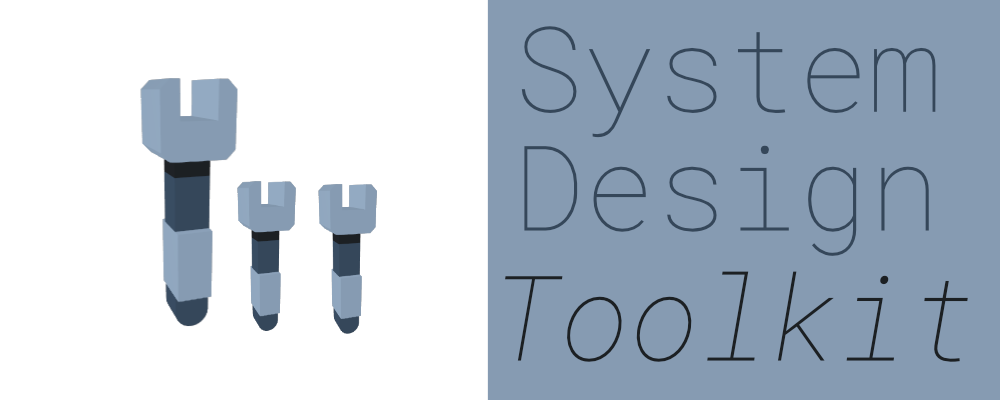
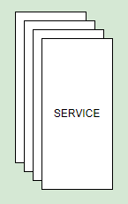
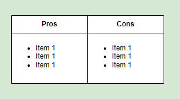

JaDogg's Website
[1] Introduction
I got an idea to come up with set of reusable (technology oblivious) building blocks for system design. Main point is you can either use it diagrams.net (or desktop version), whiteboard or any other tool you like. I use it myself and there's no reason for people other than me to use it. I'm designing this backwards from system design diagrams, so I will come up with multiple system designs and extract common components. Any form of constructive criticism is appreciated as usual.
🤔 Disagreeing for the sake of it is bad, cargo-culting is bad, somewhere middle is probably zen. - Me.
[1.1] Components
[1.1.1] Service

This is used for microservice components. Reason why I put multiple boxes here is to indicate that there are more than one service instance running.
Load balancing for this service is assumed to be dealt with. I do not think there's a reason to draw load balancers, but you can draw it if you wish.
This is different from function/lambda component.
[1.1.2] Pros-Cons Box
This is rather simple table to list pros and cons. Use it when you want to compare different technologies of decisions.
Pro - it got pros. Con - it got cons.
[1.2] Usage Samples
[1.2.1] Tinder System Design

I'm up for suggestions. If you got an idea let me know.